Obiecte decorative din pietre
Toamna, mai ales septembrie este timpul ideal pentru proiectele handmade din materiale naturale (pietre, scoici, frunze, semințe, castane, crenguțe) deoarece avem materiale în ,,stoc” adunate în timpul vacanței de vară. Confecționarea decorațiunilor din materiale naturale sunt cele mai interesante la orele de AVAP deoarece ne folosim la maxim imaginația și creativitatea. Pietrele sunt printre cele mai folosite materiale la realizarea decorațiunilor deoarece se găsesc foarte ușor în natură. Ele pot fi ușor pictate cu creioane colorate, creioane cerate, sclipici sau culori acrilice. Pentru lipit se va folosi pistolul de lipit cu silicon, iar pentru strălucire și durabilitate putem folosi lac fixativ de păr sau lac de unghii transparent. Unele pietre (cele de râu) nu mai trebuie să le pictăm, deoarece le găsim în culori diferite în natură. Ele au diverse mărimi și forme. Pietrele pot căpăta astfel mai multe funcții: cadou, talisman, decorațiune de perete, de masă, de grădină, un obiect util de birou sau chiar un joc didactic.
Iată, ce putem confecționa cu ajutorul pietrelor:
Struguri:
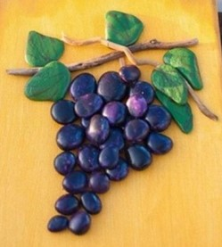 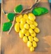 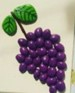 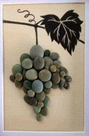Tablou cu corabie, Barca
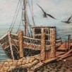 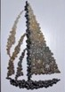Tablou cu pesti
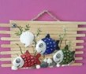 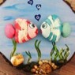 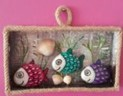Tablou cu flori
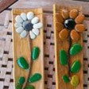 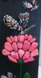 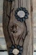 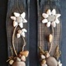 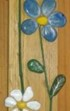 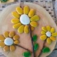 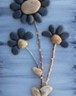 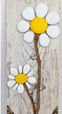 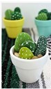Copaci
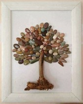 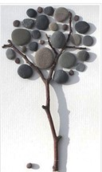 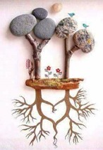Pietre pictate cu diferite model (cu puncte, linii)
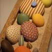 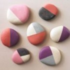Sticlă decorată cu pietre
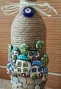Joc didactic pe pietre: Numărul substantivelor; joc puzzle
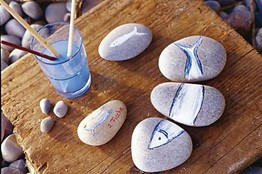 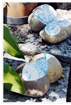Inimoare pe suport de piatră
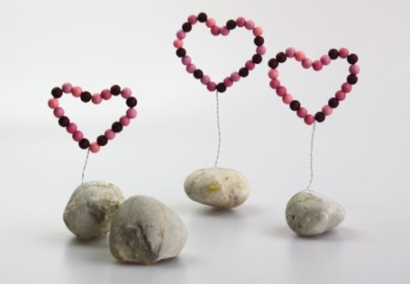Iepurași și șoricei
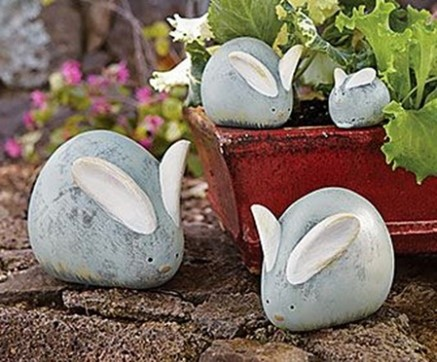 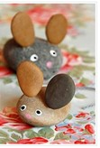Libelule
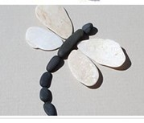 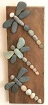Păsări
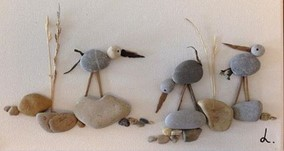 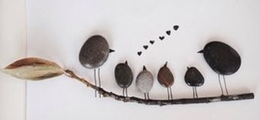 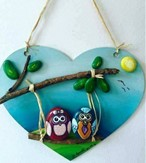Tălpi mici și mari
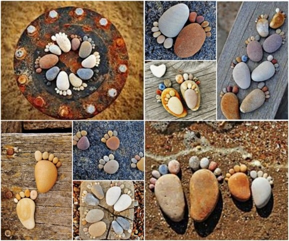Covoraș de baie
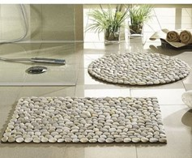 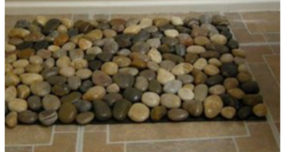Față de masă
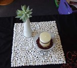Cuier de piatră (cu dublu adeziv)
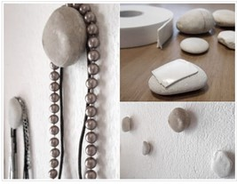Ramă foto și suport pentru fotografii
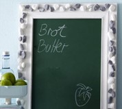 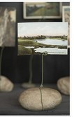 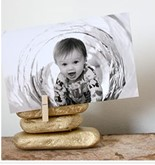Tablou
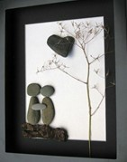 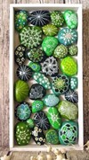 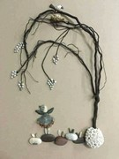 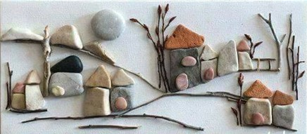Suport pentru lumânări
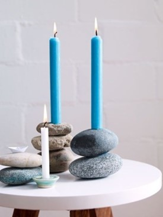 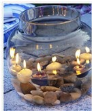 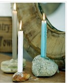Pește prins în plasă
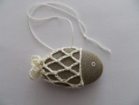Decorarea unui ghiveci de flori

Suport pentru oale fierbinți
Tăbliță cu numărul casei
Decorațiuni utile pentru birou
Opritor pentru ușă
Decorațiune însuflețită cu floricele proaspete, apă și pietre
Atunci când vă plimbați prin apropierea unui râu încercați să strângeți pietre cu forme și culori interesante pe care le veți putea folosi apoi la orele de AVAP. După cum observați imaginile, pentru unele decorațiuni mai aveți nevoie de o placă de lemn, câteva crenguțe uscate, flori vii sau uscate, sfoară. Pietrele trebuie spălate foarte bine și uscate, putând apoi să le vopsiți în diferite culori. Vă recomand să realizați schițe cu un creion pe o foaie de hârtie. Gândiți-vă, ce să desenați? Flori, animale, monștri, mandale sau îngeri păzitori? Puteți scrie ceva pe pietre pentru a se potrivi cu motivul și ocazia? (De exemplu „Rămâi sănătos!”, „Mă gândesc la tine”, „Te iubesc!”, sau „Îmi este dor de tine”).
Un tablou din pietre poate fi o decorațiune interesantă pentru living sau dining. Un obiect confecționat din pietre sau decorat cu pietre poate căpăta o funcție utilă care, cu siguranță va fi admirat de toți cei care îl vor vedea.
Sursă: nettetipps.de, pinterest.de